Muscular system
Cardiac Muscle
Cardiac Muscle (Low - 250µm)
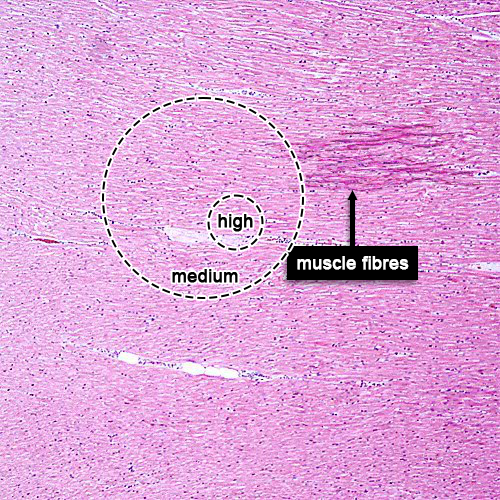
Cardiac Muscle (Medium - 50µm)
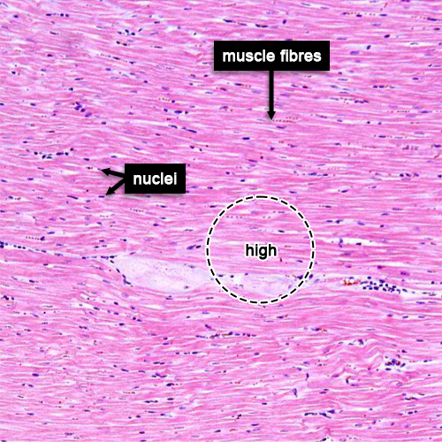
Cardiac Muscle (High - 50µm)
Smooth Muscle
Smooth Muscle (Low - 250µm)
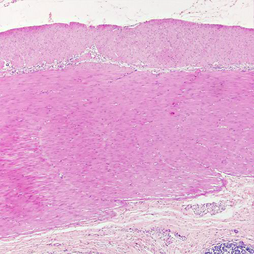
Smooth Muscle (Medium - 50µm)
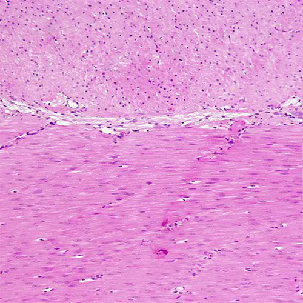
Smooth Muscle (High - 50µm)
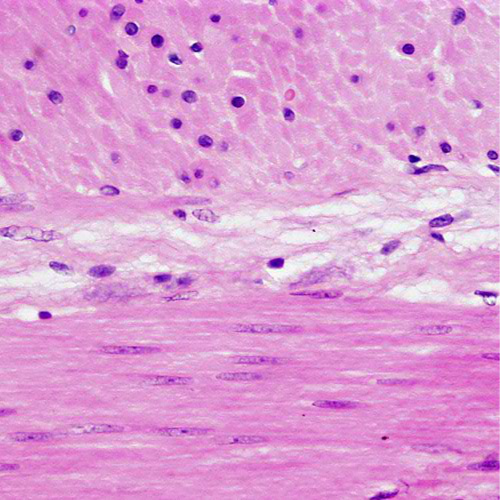
Skeletal Muscle
Skeletal Muscle (Low - 250µm)
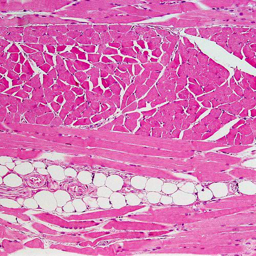
Smooth Muscle (Medium - 50µm)
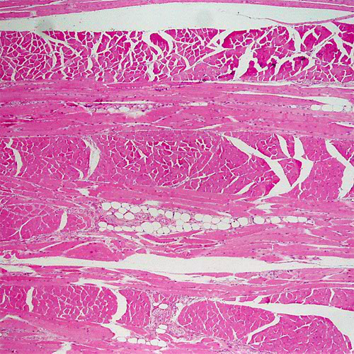
Smooth Muscle (High - 50µm)
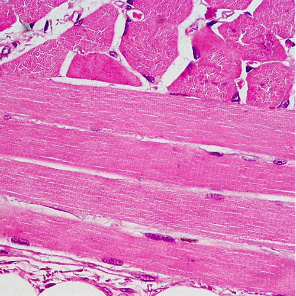
Motor End Plate
Skeletal Muscle (Low - 250µm)
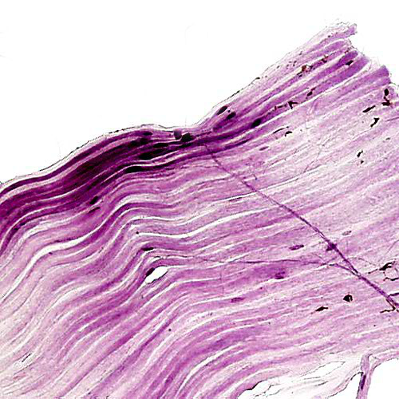
Smooth Muscle (Medium - 50µm)
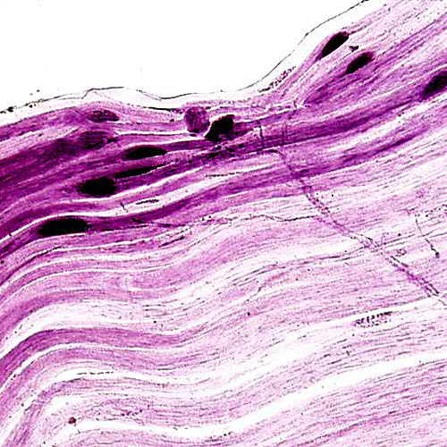
Smooth Muscle (High - 50µm)
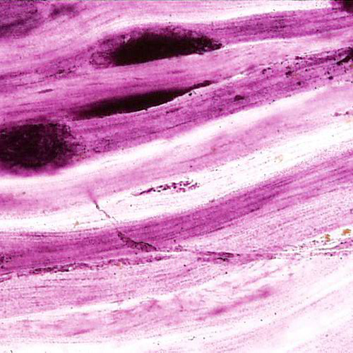